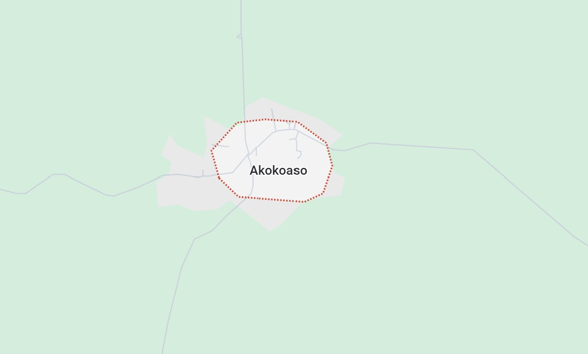
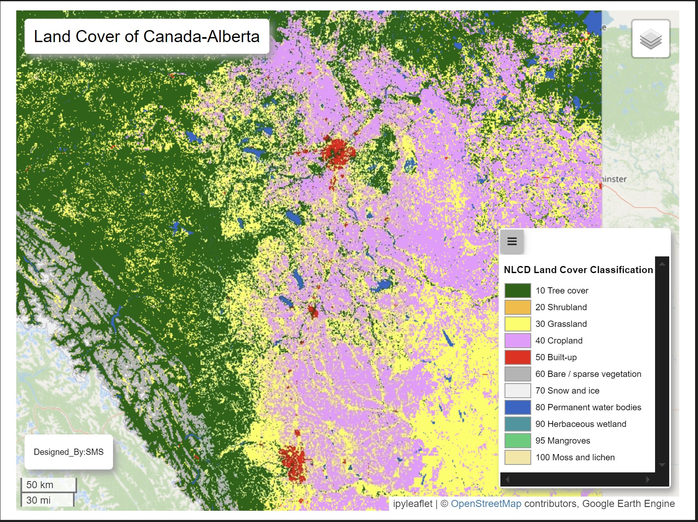
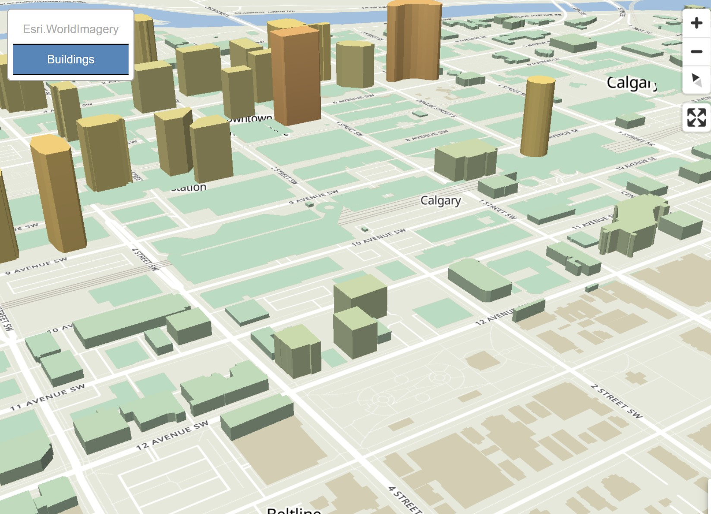
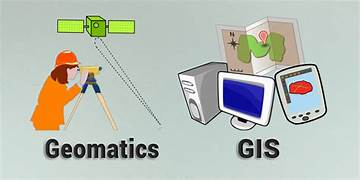

Akokoaso Base Map
Akokoaso is a town located in the Akyemansa District in the Eastern Region of Ghana. It is a part of the traditional Akyem states, which are historically significant and known for their rich culture and heritage. Akokoaso, like many towns in the district, is a rural community with agriculture being the primary occupation of its people.

Visual Alberta Land Cover
Visualise the Alberta land cover from the ESA at a 10m resolution. This dataset was streamed from google earth. Currently I am still working on the percentage or area of the various landsize of the covers. I would also update this in the meantime. The datasets used were available as the time of 2020-01-01T00:00:00Z–2021-01-01T00:00:00Z from google earth engine. I am also working on getting the legend on the html file.

3D Downtown Calgary
Explore the vibrant core of Calgary like never before through a dynamic 3D visualization of downtown buildings. This interactive map transforms standard building footprints into polyhedral shapes, giving each structure realistic height and form based on actual or estimated building data. Whether you're an urban planner, architect, researcher, or simply curious about cityscapes, this visualization offers a fresh, immersive perspective on the city's architectural landscape.

GeoMath
This is a geomatics package designed to help students in calculations and computation in subfields such as photogrammetry, geodesy, survey and least-square adjustment in geomatics.
AskGeosAi
An AI model designed to give precise and accurate answers in the field of geomatics, spanning from the areas of geodesy, GIS, photogrammetry, remote sensing, survey and other fields in geomatics. This model would be trained and updated frequently to serve and meet the demands of users. .
Get Busy
A society that gathers the best minds to create opportunities that would contribute positively to society. Our aim as a society is to socially improve the lives in society with minimal to no environmental destruction in society. This society serves as a platform that discuss business opportunities and how feasible one implement them